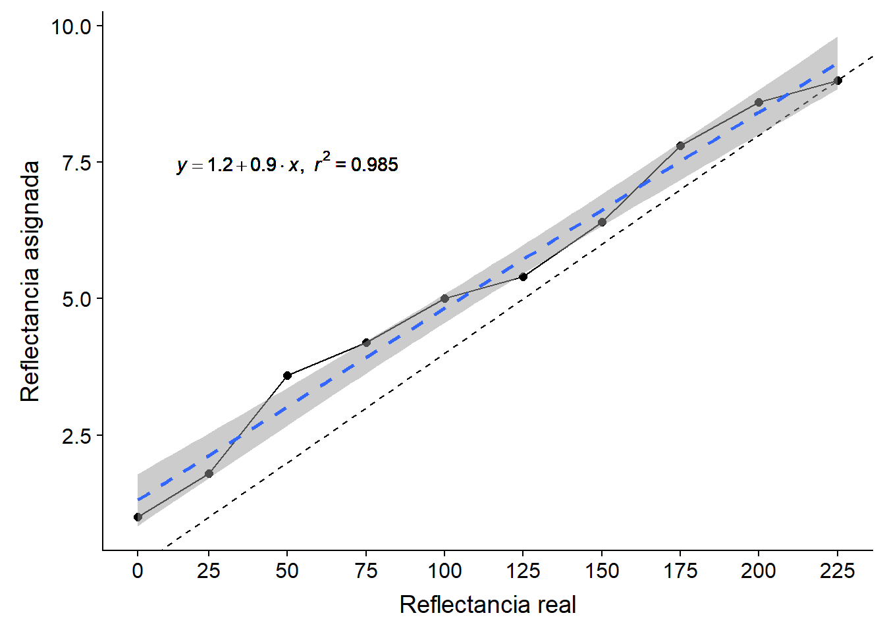
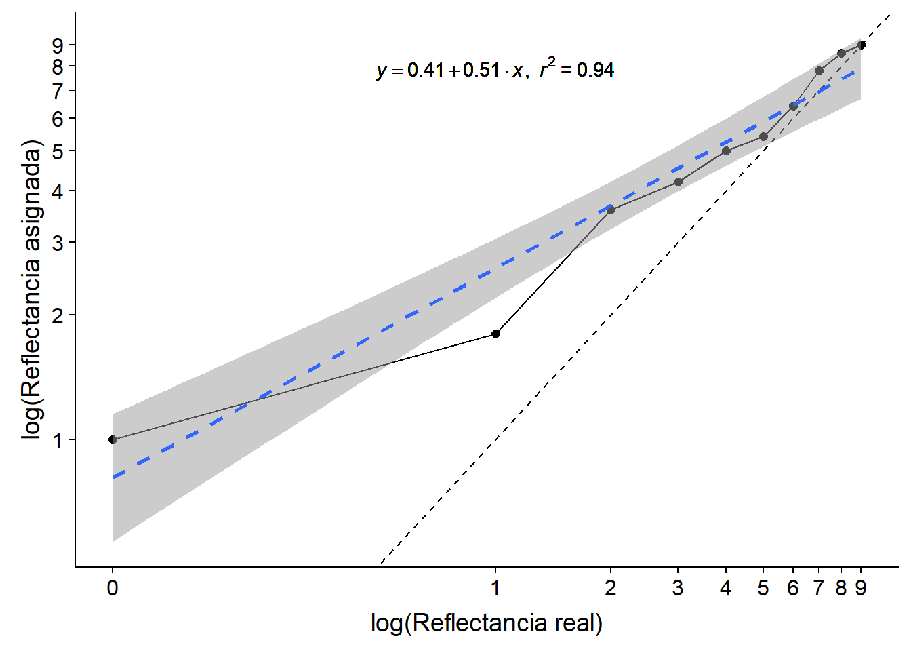

En desarrollo… / Under development…
Antes de empezar
Antes de empezar el temario es necesario recordar que para asimilar de manera efectiva el temario de esta parte de la asignatura es necesario tener interiorizados los siguientes conceptos básicos de estadística descriptiva e inferencial:
Medidas de tendencia central: media, mediana, moda.
Medidas de dispersión: desviación estándar y varianza.
Teorema central del límite, distribución normal, distribución normal cumulativa.
Métodos inferenciales: t.student, ANOVA, modelos lineales.
Sin embargo, no necesitaremos conocer las fórmulas para calcular muchos de los elementos señalados anteriormente, ya que de eso se encargan paquetes estadísticos como SPSS, Excel, MatLab o R. De aquí en adelante, todo el código que se muestre en pantalla corresponderá al lenguaje R.
# Las librerías que necesitamos
libraries <- c("tidyverse","cowplot","quickpsy",
"broom","knitr","circular")
# Cargamos las librerias que necesitamos, si no las tenemos, indicamos a R que las instale
invisible(
lapply(
libraries, function(x) {
if(!require(x, character.only = T, quietly = T)) {
install.packages(x)
require(x, character.only = T, quietly = T)
}
}
)
)Práctica 1: Efectos cromáticos
Conceptos previos
Un estímulo puede caracterizarse por diversas características físicas. En esta práctica, nos centraremos en aquellas relacionadas con cómo percibimos el color. Para comenzar, es necesario mencionar que el color no es una propiedad de los objetos, sino una respuesta perceptiva a un estímulo determinado que depende de:
Las características de la fuente lumínica y las longitudes de ondas predominantes.
La reflectancia de la superficie sobre la que se refleja la energía proviniente de la fuente lumínica.
Las caracteristicas del sistema perceptivo que se encarga de dar sentido al estímulo. Por ejemplo, para ser capaces de discriminar entre estimulaciones de diferentes longitudes de onda sería necesario poseer 2 tipos de conos diferentes (principio de univarianza). De lo contrario, únicamente seríamos capces de discriminar entre intensidades lumínicas.

Desde una perspectiva física, el factor más importante para describir el color es la longitud de onda (\(\lambda\)). La longitud de onda se trata de una dimensión contínua descrita por el conocido como espectro electromagnético. Aunque nuestros sentidos nos permiten acceder de diferentes maneras a ciertas partes de este contínuo, la visión únicamente nos permite acceder a aquellas longitudes de onda dentro de la región de los 380 a los 760 nm aproximadamente. Sin embargo, en la mayoría de casos no estamos expuestos a una estimulación equienergética (es decir, con la misma energía en todo el espectro). Por lo contrario, las superficies sobre las que se proyecta esa energía, absorben parte de la misma y reflejan otra parte. Por esta razón es importante conocer cómo puede reaccionar una superficie a la exposición de una misma radiación:
- Reflexión selectiva: Indica la cantidad relativa de longitudes de onda que una superficie refleja dada una luz blanca (equienergética). Por ejemplo, un tomate absorbería longitudes de onda cortas y medias (azules y verdes), mientras que reflejaría ondas de longitud larga (rojo).

- Curva de reflectancia: Indica la intensidad absoluta de longitudes de onda reflejadas. En la siguiente figura se puede ver cómo el área bajo la curva que describe el color azul más claro es mayor que la del azul más oscuro. De la misma manera, si el tomate anterior tuviese una superficie mate, percibiríamos un tono rojo mà s oscuro porque reflejaría menos cantidad de energía.

La combinación de ambas caracteristicas sobre cómo reaccionan diferentes superficies a la luz son suficientes para describir la percepción del color en diferentes sistemas. En concreto, nosotros vamos a definir las características del color mediante el sistema HSV. Dentro de esta categorización encontramos las siguientes dimensiones:
Matiz/Hue: Se relaciona con cantidad relativa de las longitudes de onda reflejadas. Es lo que comunente denominamos como color. Su correspondencia psicofísica sería la experiencia subjetiva de la percepción de diferentes tonos cromáticos (rojo, verde, azul y amarillo principalmente).
Luminosidad o intensidad (también llamado valor): Hace referencia a la cantidad absoluta de luz que refleja una superficie en una determinada direción o ángulo por unidad de superficie. En el SMI se mide en \(cd/m^{2}\) (candelas por metro cuadrado). Este es un factor de vital importancia en determinadas situaciones. Por ejemplo, las empresas de telefonía móvil han logrado superar en los últimos dispositivos la barrera de las 300 \(cd/m^{2}\) optimizando el consumo de batería para favorecer la visibilidad bajo la luz solar. Dentro del espectro electromagnético estaría indicado por la amplitud de onda. Por su parte, su correspondencia psicofísica sería el brillo, que estaría definido como la sensación percibida de la intensidad lumínica.
Saturación: Hace referencia a la proporción de blanco/negro con respecto al matiz cromático puro. Es decir, cuando hay una alta intensidad únicamente en una longitud de onda (o rango de longitudes de onda), el color será muy saturado. Mientras que si la intensidad está repartida uniformemente a través del espectro electromgnético se dirá que está poco saturado.

Como podemos ver, dependiendo de la intensidad y distribución del rango del espectro visible disponible, podemos categorizar diferentes tipos de estimulación de forma independiente. Sin embargo, cuando se trata de la correspondencia psicofísica entre el estímulo físico y nuestra sensación consciente, diferentes efectos observados en la literatura indican que las dimensiones del sistema HSV están ínterelacionadas.
Efecto Abney
Cambio en el matiz percibido inducido por cambios en la pureza cromática (saturación). No es debido ni a cambios en la longitud de onda ni en el brillo.

Tanto el Hue como la luminosidad se mantienen constantes, mientras que lo que varía es la saturación. Esto produce un cambio en el matiz percibido.
Efecto Bezold-Brücke
Cambio en el matiz percibido inducido por cambios en el brillo. NO es debido ni a cambios en la longitud de onda ni en la saturación.

Tanto el matiz como la saturación se mantienen constantes, mientras que lo que varía es la luminosidad. Esto produce un cambio en el matiz percibido.
Efecto Helmholtz-Kohlrausch
Un estímulo cromático (con matiz), es percibido como más brillante que un estimulo acromático aunque ambos tengan la misma luminancia.

Tanto el matiz como la saturación se mantienen constantes, mientras que lo que varía es la luminosidad. Esto produce un cambio en el brillo o luminosidad percibida.
Parte práctica: Efecto Helmholtz-Kohlsrauch
Este efecto es descrito como la sensación de que un estímulo cromático (con matiz), es percibido como más brillante que un estimulo acromático aunque ambos tengan la misma luminancia.
Estímulación física:
\[\begin{equation} \label{HK_F} \ Lum_{Crom} = Lum_{Acrom} \end{equation}\]Sensación perceptual:
\[\begin{equation} \label{HK_S} \ Brillo_{Crom} > Brillo_{Acrom} \end{equation}\]
Para poner a prueba este efecto, pedimos a los participantes ajustar la luminancia del estímulo acromático (estímulo test o de comparación) para hacer coincidir en brillo con el estímulo cromático (estímulo estándar o de referencia).
Estamos también interesados en saber si hay algún matiz que se percibe como más brillante que otro, por lo tanto creamos un experimento con la siguiente metodología.
Variables
Variables independientes (VI):
Matiz del estímulo (rojo, verde, azul, amarillo).
Luminancia del estímulo cromático.
Variable dependiente (VD), aquella que manipula el observador:
Luminanica asignada por el participante al estímulo cromático.
Como no somos procesadores de información infalibles y nuestra respuesta tiene cierta variabilidad o error, hemos de realizar cada combinación de condiciones varias veces. En este caso, para que el experimento sea corto hemos introducido únicamente 3 repeticiones. Por lo tanto: 4 matices * 10 luminancias del estímulo cromático * 3 repeticiones dan un total de 120 ensayos o trials.
Hipótesis
Dado el mismo brillo percibido
- La luminancia del estímulo acromático será mayor que la del estímulo cromático
Análisis de datos
id_1 <- read.table("./pia/P1/EkiCroma_effect.dat", header =T) %>%
mutate(id = 1)
id_2 <- read.table("./pia/P1/EkiCroma_no_effect.dat", header = T) %>%
mutate(id = 2)
id_3 <- read.table("./pia/P1/EkiCroma_reffect.dat", header =T) %>%
mutate(id = 3)
ekicroma <- bind_rows(id_1,id_2,id_3) %>%
arrange(NEst) %>%
mutate(Hue = ifelse(NEst < 10, "Amarillo", ifelse(NEst < 20, "Verde", ifelse(NEst < 30, "Rojo", "Azul")))) En la siguiente figura se pueden observar los resultados para diferentes observadores.
ggplot(ekicroma,aes(Stand,Compar,color=Hue)) +
geom_point() +
geom_abline(linetype = 2) +
geom_smooth(method ="lm", se = F) +
facet_grid(~id) +
labs (x = "Standard stimuli, chromatic", y = "Comparison stimuli, achromatic") +
coord_cartesian(xlim= c(0,max(ekicroma$Stand), ylim = c(0,max(ekicroma$NEst)))) +
scale_color_manual(values = c("darkgoldenrod1","blue","red","green")) +
theme_minimal(10) +
theme(legend.position="bottom")
Models <- ekicroma %>%
group_by(id) %>%
do(model = anova(lm(Compar ~ Stand * factor(Hue), data = .))) %>%
tidy(model) %>%
mutate(p.value = format.pval(round(p.value,3),eps = 0.01))
kable(Models %>% filter(id ==1),digits=2)| id | term | df | sumsq | meansq | statistic | p.value |
|---|---|---|---|---|---|---|
| 1 | Stand | 1 | 212666.77 | 212666.77 | 179.74 | <0.01 |
| 1 | factor(Hue) | 3 | 25316.17 | 8438.72 | 7.13 | <0.01 |
| 1 | Stand:factor(Hue) | 3 | 10341.63 | 3447.21 | 2.91 | 0.038 |
| 1 | Residuals | 112 | 132515.14 | 1183.17 | NA | NA |
kable(Models %>% filter(id ==2),digits=2)| id | term | df | sumsq | meansq | statistic | p.value |
|---|---|---|---|---|---|---|
| 2 | Stand | 1 | 401172.80 | 401172.80 | 554.71 | <0.01 |
| 2 | factor(Hue) | 3 | 855.79 | 285.26 | 0.39 | 0.757 |
| 2 | Stand:factor(Hue) | 3 | 2696.69 | 898.90 | 1.24 | 0.298 |
| 2 | Residuals | 111 | 80276.42 | 723.21 | NA | NA |
kable(Models %>% filter(id ==3),digits=2)| id | term | df | sumsq | meansq | statistic | p.value |
|---|---|---|---|---|---|---|
| 3 | Stand | 1 | 345519.55 | 345519.55 | 158.17 | <0.01 |
| 3 | factor(Hue) | 3 | 24603.80 | 8201.27 | 3.75 | 0.013 |
| 3 | Stand:factor(Hue) | 3 | 3963.63 | 1321.21 | 0.60 | 0.613 |
| 3 | Residuals | 112 | 244663.01 | 2184.49 | NA | NA |
Ejercicios para resolver en clase:
Con ayuda de las tablas ANOVA y el gráfico anterior identifica:
¿Qué indica la linea de lineas discontinuas del gráfico?
¿Hay algún observador en el que se observe el efecto Helmholtz-Kohlsrauch? Indica en cual o cuales.
¿Se observa un efecto del matiz/Hue sobre el brillo percibido?
Imagina que observamos el efecto Helmholtz-Kohlsrauch y un efecto del matiz:
¿Cómo sería el gráfico para un observador modelo?
¿Esperarías un efecto de la interacción entre ambas variables?
¿Como sería, por lo tanto, la tabla ANOVA esperada?
Conclusiones Práctica 1
Aunque se percibe el mismo brillo para ambos estímulos, la luminancia del cromático es menor que la del estímulo acromático.
El efecto es distinto dependiendo del matiz utilizado.
En condiciones de laboratorio, efectos visuales dan resultados consistentes aún con muestras muy pequeñas, aunque existe cierta variabilidad. La variabilidad entre los participantes e incluso de un mismo participante puede deberse entre otros factores a:
Momento del día.
Luz ambiental: luz del sol, halógeno, bombillas incandescentes, etc.
Pantalla utilizada (su rango dinámico).
Concentración empleada.
Práctica 2: Obtención de los umbrales de detección de la colinealidad.
Conceptos previos
El paso de la Filosofía a la Psicología como ciencia ha sido objeto de debate durante largo tiempo y establecer precursores a veces puede ser inexacto. Sin embargo, hay momentos en el desarrollo de la epistemología o filosofía sobre el conocimiento que han ayudado historicamente a entender por qué y cómo el objeto de estudio de la Psicología, es decir, el estudio de la conducta pasó a considerarse una ciencia (Para una interesante descripción que se puede discutir en clase continúa aquí).
La corrientes filosóficas imperantes hasta la ilustración abogaban porque el conocimiento podia existir independientemente del observador y que, de hecho, el mismo podría acceder a él mediante ciertos criterios de verdad basados en la lógica. El observador se trata por lo tanto de un sujeto pasivo que ya posee sensaciones e ideas a las cuales sólo necesita acceder para conocerlas. Es durante la Ilustración, en el siglo XVII cuando Inmanuel Kant utiliza la metáfora del giro copernicano (pasar de un universo geocéntrico a un universo heliocéntrico) para situar de nuevo al observador en una posición activa sobre el conocimiento. Kant argumenta que para llegar al conocimiento, las sensaciones han de pasar por una especie de filtro. Una serie de ideas trascendentales que dan forma a esas sensaciones. Estas ideas son inacesibles por un observador, y por lo tanto, no son susceptibles de poder ser estudiadas. En este momento, sin saberlo, Kant estaba describiendo cómo las diferentes estructuras sensoriales filtran y dan forma al tipo de información que un sistema biológico para generar algún tipo de conocimiento sobre el entorno. Por ejemplo, el paso de la energía electromagnética que compone la luz a la energía bioquímica que utiliza el sistema nervioso.
Inciso: Estos dos últimos párrafos no serán objeto de examen, pero siempre es importante saber de dónde venimos para poder entender a dónde vamos.
A principios del siglo XIX, Ernst Weber describe, la que se conoce como la primera ley Psicofísica, la Ley de Weber. Ãste médico alemán, se dió cuenta de que la capacidad de diferenciar dos pesos diferentes no se encontraba tanto en el peso absoluto de un objeto, sino en la diferencia relativa entre un objeto de referencia (Estímulo de referencia) y otro (Estimulo de comparación). Weber encuentra que para que dos objetos de diferente masa pudieran ser diferenciables, su masa debería variar entorno a un 3%. Es decir, si el objeto de referencia pesa 100g, para ser capaces de diferenciarlo de otro, éste debe pesar 103/97g o más/menos. El dato importante está en que Weber se dió cuenta de que esto se cumplia irrespectivamente del peso de refrencia. Es decir, al igual que en el anterior ejemplo, para que un objeto de 2kg. pudiese diferenciarse de otro, éste debería pesar al menos 2.06kg.
Si dividimos la diferencia necesaria para poder diferenciar dos estímulos entre la magnitud del estímulo de referencia podemos obtener una constante (\(k\)).
\[\begin{equation} \label{WF} \ k = \frac{\Delta I}{I_{ref}} \end{equation}\]Esta constante nos permite obtener de forma rápida la Mínima Diferencia Perceptible (MDP o Just Noticeable Difference; JND en inglés) con respecto a cualquier intensidad de un estímulo.
data_frame(I = seq(1,10,by = 0.5),
k = 0.05,
DI = I * k) %>%
ggplot(aes(I,DI)) +
geom_point() +
labs(x = "Intensidad del estímulo de referencia (I)", y = expression(Delta~I~(difference~threshold))) +
annotate("text", x = 9, y = 0.1, label = "paste(bold(k),' = ', bold(0.05))", color = "red", parse =T, size = 5) +
theme_minimal(10)
Además, podemos utilizar esta constante (\(k\)), como un índice de sensibilidad para comparar entre diferentes modalidades sensoriales.
El paso clave de la Filosofía a la Psicología viene dado en primer lugar por Fechner a partir de los principios en Psicofísica. A la vista de los descubrimientos de Weber, Fechner argumenta que la relación entre la estimulación física y su sensación percibida puede ser medida mediante sencillas relaciones matemáticas como la ley de Weber.
Fechner, junto a Helmholtz y Wundt se consideran los padres de la Psicología Experimental y de la Psicofísica. Bajo la perspectiva de la psicofísica, podemos describir el proceso perceptivo completo mediante la siguiente cadena causal:
Estímulo distal: Estimulación o energía física reflejada o producida por una fuente externa a los mismos receptores sensoriales. Por ejemplo, una pelota.
Estímulo proximal: Proyección de la energía del estímulo distal sobre los receptores sensoriales correctos. Por ejemplo, la imagen 2D en la retina.
Transducción: Transformación de la energía proyectada por el estímulo proximal a cambios energéticos dentro del sistema nervioso.
Percepción: Tras pasar por diferentes fases de procesos nerviosos, se daría la percepción de un estímulo.
Esta cadena nos muestra que el proceso perceptivo requiere de diferentes transformaciones de la energía que daría lugar al percepto. Lo que haría que nuestra percepción no tenga una correspondencia directa con la estimulación física. Sin embargo, esto es algo que nos es familiar ya… Cof, cof… ;P
Es por esta razón que Fechner propone diferntes métodos para estudiar cómo se relacionan la estimulación física con la percepción.
Métodos psicofísicos
- De los límites: el experimentador incrementa/decrementa progresivamente y de forma ordenada la intensidad del estímulo hasta que el observador cambia su respuesta. Por ejemplo, si queremos averiguar a qué intensidad de decibelios un sonido es audible podemos hacer el siguiente experimento: Empezamos a mostar a un participante un ruido a un nivel claramente audible y le pedimos que pulse l botón “S” si lo oye y el botón “N” si no lo oye. A medida que el participante va respondiendo que oye el sonido vamos disminuyendo los decibelios hasta que cambia su respuesta de “S” (sí), a “N” (no). En ese momento, empezamos a presentar estímulos en la dirección contraria, es decir, si antes cada vez que el participante afirmaba oír el ruido disminuíamos la intensidad, ahora presentamos un sonido claramente inaudible y a medida que va afirmando que no oye el estímulo vamos aumentando su intensidad.

- De los estímulos constantes: presentación aleatoria (o pseudoaleatoria) de un conjunto de intensidades seleccionadas de antemano.

- Del ajuste: el sujeto controla y ajusta la intensidad del estímulo.

Vamos a poner un ejemplo:
Detección del Umbral Absoluto
Fechner estaba interesado en poder establecer una escala de correspondencias psicofísicas. Esta escala se empezaría siempre a contabilizar desde la intensidad mínima que es posible percibir un 50% de las veces. Punto que denominaría como Umbral Absoluto. Vamos a ver cómo podemos aplicar esto a la vida real…
Imaginemos que queremos saber cual es la mínima cantidad de gotas de edulcorante que son necesarias para empezar a percibir el café dulce (sí, estoy escribiendo con café en la mano). Esta se trataría de una tarea de detección. El objetivo de las tareas de detección es la obtención del nivel estimular mínimo para detectar un estímulo (Umbral Absoluto) al nivel del azar (el 50% de las veces).
\[\begin{equation} \label{UA} \ UA = Q2 \end{equation}\]En nuestro laboratorio tenemos 11 muestras de café, en cada una de las cuales hemos puesto de 0 a 10 gotas de edulcorante. Para ver cual es el mínimo número de gotas necesarias haremos probar a los participantes las diferentes tazas de café de forma aleatoria varias veces y anotaremos su respuesta (si lo percibe dulce Sí o No si lo percibe tan amargo como siempre).
¿Qué método psicofísico habríamos utilizado?
Después de realizar el experimento, calculamos la media de síes (codificados como 1) y noes (codificados como 0). Si representamos gráficamente estos datos, en la mayoría de casos obtendremos un grafico parecido al siguiente:
ggplot(data_frame(I = seq(0,10,by=1),
p = pnorm(I,mean = 5,sd = 1)),aes(I,p)) +
geom_point(size = 2, color = "red") +
labs(x = "Intensidad del estímulo", y = "Probabilidad de ser percibido") +
theme_minimal(10)
Dado que todos los participantes presentan cierta viariabilidad, se espera que cada uno de nosotros muestre un Umbral Absoluto relativamente diferente. Esta varaibilidad puede deberse a factores tales como el ruido intrínseco del estímulo, el ruido sensorial debido a interferencias en el sistema nervioso o criterios decisionales. Dependiendo de cuál sea su UA podemos identificar diferentes tipos de observadores:
Sensibles: Son aquellos observdores con tendencia a responder que han percibido un estímulo aún cuando la intensidad es muy baja o cuando ni siquiera se ha presentado. Podríamos hablar de un observador liberal si y si sólo si la razón de su respuesta se debiera a criterios decisionales como la tendencia al riesgo o factores motivacionales de la tarea y no puramente debido a un componente sensorial. Por ejemplo, si recompenso al participante cada vez que acierta si hay o no edulcorante pero no penalizo los errores, los observadores tenderán a responder que han percibido el edulcorante para maximizar sus ganancias.
Poco sensibles: Son aquellos que tienden a responder que han percibido un estímulo cuando la intesidad es razonablemente alta. De la misma manera, podemos hablar de observadores conservadores aludiendo a factores decisionales. Por ejemplo, los participantes reciben en principio 10 euros sólo por participar. Sin embargo, les anuncio que si se equivocan una sola vez no recibirán los 10 euros. De esta manera, los participantes tenderán a responder únicamente cuando estén completamente seguros de que el edulcorante se encuentra presente.
UA = data_frame(I=seq(0,10,by=0.05),
Medium = pnorm(I, mean = 5,sd=1),
High_Noise = pnorm(I, mean = 5, sd = 2),
Low_Noise = pnorm(I, mean = 5, sd = 0.5),
p_c_s = pnorm(I, mean = 7.5, sd = 1),
p_l_s = pnorm(I, mean = 2.5, sd = 1))
UA %>%
gather(id,value,c(Medium,p_c_s,p_l_s)) %>%
mutate(id = factor(id,levels = c("p_l_s","Medium","p_c_s"),labels = c("Sensible","-","Poco sensible"), ordered = T ),
UA = ifelse(id == "Sensible",2.5,ifelse(id == "-",5,7.5))) %>%
ggplot(.,aes(I,value, color = as.factor(id))) +
geom_line(size = 2 ) +
geom_vline(color = "red", aes(xintercept = UA), size = 1, linetype =2) +
facet_wrap(~id) +
guides(color = FALSE) +
theme_minimal(10)
Para saber si un observador es más o menos sensible que otro en cuanto al tipo de estímulo presentado podemos calcular un índice de sensibilidad de detección -> S = 1 / UA. De esta manera, un observador con un UA de 2.5 será más sensible que uno que presenta un UA de 6.
Parte práctica: Umbral Absoluto de la Agudeza Visual
¿Qué es la agudeza visual?
Agudeza visual (AV): Separación mínima entre dos puntos, dos líneas o los extremos de un aro abierto, que un observador es capaz de detectar. También denominada resolución espacial del procesamiento visual.
Depende de la distancia inter-receptores.
En ocasiones se le llama âminimum separableâ.

La agudeza visual varía dependiendo de la densidad de conos o bastones, disminuyendo a medida que nos alejamos de la fóvea. En optometría clínica, la AV normal se establece en 1 min arc.
Dentro de un laboratorio de percepción visual normalmente describimos las dimensiones de un objeto basándonos en el ángulo visual que subtende. ¿Por qué hacemos ésto? Fijémonos en la siguiente imágen:

Desde un punto de vista estructural, la distancia mínima para detectar la separación entre dos puntos es la misma que la distancia que separa dos fotoreceptores (conos o bastones) en la retina.

Discriminación: Umbral Diferencial
Pero además, Fechner encontró que no somos capaces de percibir un continuo de cambios graduales en un estímulo, si no que necesitamos de una cantidad o diferencia en la intensidad del estímulo que nos permita indicar que ha habido un cambio, a este cambio en al intensidad se le llamaría dmp o diferencia mínima perceptible. Esto se debe a que al igual que la variabilidad en el Umbral Absoluto, también nos podemos encontrar variabilidad en la medida que nuestro sistema perceptivo realiza de un estímulo. Nuestro sistema nervioso presenta ruido interno y no es capaz de representar todas las modalidades sensoriales con una correspondencia directa con el estímulo. Esto afecta a cómo somos capaces de interpretar un estímulo y es intresante para caracterizar lo bueno que es nuestro sistema sensorial discriminando entre dos estímulos parecidos. Para ello, calculamos el Umbral Diferencial (UD).
Por volver a nuestro ejemplo anterior… Imaginemos que estamos en el departamento de I+D de una conocida cadena de cafeterías y que nuestro supervisor nos dice que: la cantidad de azúcar en el café está correlacionada con el número de cafés que sirven. Es decir, vender un café más dulce incrementa el número de clientes. Sin embargo, tenemos registros de que el gusto es un sistema sensorial que se satura de forma rápida, por lo que nuestros clientes sólo son capaces de percibir el café en tres estados distintos: algo dulce, dulce y demasiado dulce. La escala de correspondencia psicofísica que propondría Fechner establecería el UA en el 0, mientras que las siguientes sensaciones percibidas estarían separadas entre sí por dmp’s.
data_frame(I = seq(0,2,by = 1),
k = 0.05,
DI = I * k) %>%
ggplot(aes(I,DI)) +
geom_point() +
labs(x = "Escala Psicofísica", y = "Sensación percibida") +
scale_x_continuous(breaks = c(0,1,2)) +
scale_y_continuous(breaks = c(0,0.05,0.1), labels = c("Algo dulce","Dulce","Demasiado dulce")) +
theme_minimal(10)
Sin embargo, nuestro jefe nos indica que los consumidores rechazan frontalmente un café demasiado dulce, por lo que nos encontraríamos con un problema: si el café está muy dulce, los clientes se quejan y dejan de acudir a nuestra cadena. Por lo tanto, nuestra misión es maximizar la cantidad de azúcar en el café para optimizar el número de ventas sin perder clientes.
Para ello haremos un sencillo experimento: Se presentarán pares de estímulos, en primer lugar el estímulo estándar, un café con 5 gotas de edulcorante (UA, el 0 en la escala de Fechner) y después, uno de los estímulos de comparación de forma aleatoria (cafés con 11 diferentes cantidades de azúcar en un rango de 0 a 10 g). Se le hará probar al participante varias veces todos los estímulos. Y, al igual que en el anterior experimento, codificaremos su respuesta como más dulce que el estándar (1) e igual de dulce que el estándar (0). De esta manera, obtendremos una curva parecida a la anterior:
UD <- data_frame(I=seq(0,10,by=1),
p_UD = pnorm(I, mean = 5,sd=2))
ggplot(UD,aes(I,p_UD)) +
geom_point(size = 2, color = "red") +
labs(x = "Intensidad del estímulo", y = "Probabilidad de ser percibido como más dulce") +
theme_minimal(10)
Si a estos puntos le aplicamos una fórmula para obtener la curva psicométrica, seremos capaces de estimar qué probabilidad hay de que un participante afirme que el café está dulce para cualquier cantidad de edulcorante. El Umbral diferencial se define como la semidiferencia entre el tercer y el primer cuartil. Es decir, la mitad de la diferencia entre el punto que arroja una probabilidad de percibir el café como más dulce del 75% y del 25%.
\[\begin{equation} \label{UD} \ UD = (Q3 - Q1)/2 \end{equation}\]UD_lin <- data_frame(I=seq(0,10,by=0.1),
p_UD = pnorm(I, mean = 5,sd=2))
##########################################################################################
########################### DISCRIMINACI?N: UMBRAL DIFERENCIAL ###################
# ##########################################################################################
I_Q3 = UD_lin$I[which.min(abs(UD_lin$p_UD-0.75))]
I_Q1 = UD_lin$I[which.min(abs(UD_lin$p_UD-0.25))]
UD_1 = (I_Q3-I_Q1)/2
ggplot(UD_lin,aes(I,p_UD)) +
geom_line(size = 2) +
geom_point(color = "red", x = I_Q1, y = 0.25, size = 4) +
geom_point(color = "red", x = I_Q3, y = 0.75, size = 4) +
geom_vline(xintercept = c(I_Q1,I_Q3), color="red") +
geom_segment(aes(x=5,xend=5+UD_1,y=0.1,yend=0.1),color="red",arrow= arrow(length = unit(0.1, "inches"))) +
geom_text(aes(x=I_Q3*1.25,y=0.1,label="UD = (Q3 - Q1)/2"),color="red",arrow= arrow(length = unit(0.1, "inches"))) +
theme_minimal(10)## Warning: Ignoring unknown parameters: arrow
En nuestro experimento hemos observado que: El primer cuartil es 3.7g., mientras que el tercer cuartil es 6.3g. Por lo tanto:
\[\begin{equation} \label{UD_1} \ 1.3 = (6.3 - 3.7)/2 \end{equation}\]Como hemos podido observar en la anterior curva, en definitiva, el Umbral Diferencial se trata de una medida sobre el rango de intnsidades que genera dudas al participante u observador sobre cómo categorizar debido al ruido en la medida. De esta manera, podemos visualizar diferentes niveles de sensibilidad a una modalidad sensorial según lo amplio que sea este rango.
En la siguiente figura podemos encontrar una representación gráfica de 3 niveles de sensibilidad:
a <- data_frame(
I=seq(0,10,by=0.1),
Sensible = pnorm(I, mean = 5,sd=0.5),
Medium = pnorm(I, mean = 5,sd=1),
Baja_Sensibilidad = pnorm(I, mean = 5,sd=2)
)
a %>%
gather(id,value,c("Sensible","Medium","Baja_Sensibilidad")) %>%
mutate(id = factor(id,levels = c("Sensible","Medium","Baja_Sensibilidad"),labels = c("Alta sensibilidad"," ","Baja sensibilidad"), ordered = T )) %>%
ggplot(.,aes(I,value, color = id)) +
geom_line(size = 2) +
geom_vline(xintercept = 5, color = "red", size = 1, linetype = 2) +
labs(x = "Intensidad del estímulo", y = "Probabilidad de responder \'SI\' ") +
facet_wrap(~id) +
guides(color = FALSE) +
theme_minimal(10)
Con el umbral diferencial podemos obtener varios índices de sensibilidad a un estímulo:
- Igual que hacíamos con el UA, podemos calcular un índice de sensibilidad de discriminación -> S = 1 / UD.
- De esta manera, un observador con un UD de 2.5 será (?) sensible que uno que presenta un UD de 6.
- Constante (k) o fracción de Weber:
Como se mencionó anteriormente, una de las utilidades de calcular la constante de la ley de Weber es que nos permite comparar entre diferentes modadlidades sensoriales. Si recordamos, Weber describió la comparación entre pesos con una \(k_{peso} = 0.03\). Por otra parte, en nuestro experimento hemos observado una k para la comparación de cantidades de azúcar de \(k_{azúcar} = 0.26\).
¿Qué modalidad sensorial es más precisa?
Ahora que ya sabemos cuál es el \(k_{azúcar} = 0.26\) (y asumiendo que se cumple la ley de Weber), calcula cuál sería el punto de mínima cantidad de edulcorante con el cual el café se percibiría como demasiado dulce.
Utilizando Logit para linealizar
Uno de los problemas que presentan las curvas anteriores es que, no son fáciles de interpretar, ya que requieren un ajuste no lineal para calcular el UA y el UD con precisión. Sin embargo, podemos utilizar ciertos “trucos” matemáticos para facilitarnos esta misión. Para ello, vamos a utilizar una transformación de nuestros datos anteriores con el objetivo de pasar de una curva con forma sigmoidal a una función lineal. Para ello, vamos a transformar las probabilidades en lo que se denomina como unidades logit aplicando la siguiente fórmula:
\[\begin{equation} \label{logit} \ logit(p) = ln(\frac{p}{1-p}) \end{equation}\]En ésta fórmula, \(p\) es la probabilidad asociada a cierta respuesta para una intensidad determinada y \(ln\) el logaritmo neperiano o natural (no confundir con el logaritmo en base 10 o \(log\)). Si aplicamos esta fórmula a la curva anterior obtenemos una aproximación funcional a una función lineal.
logit = UD %>%
mutate(logit_Medium = log(p_UD/(1-p_UD)))
fit_logit = coef(lm(logit$logit_Medium ~logit$I ))
ggplot(logit,aes(I,logit_Medium)) +
geom_point(size=4, color = "red") +
labs(x = "Intensidad del estímulo", y = "Probabilidad de responder \'SI\' \n en unidades Logit' ") +
geom_smooth(method ="lm", se = F) +
geom_hline(yintercept = 0, linetype = 2) +
annotate(geom="text", x = 6, y = -2, label = paste("y = ",round(fit_logit[1],2)," + ", round(fit_logit[2],2),"x")) +
theme_minimal(10)
Si aplicamos una regresión lineal a los puntos anteriores mediante sistemas como SPSS, Excel, MatLab o R (o incluso a mano si diesemos esta clase 10 años antes), podemos obtener la probabilidad asociada a cualquier intensidad. Además, una propiedad interesante de esta transformación es que la proporción del 50%, es decir, el segundo cuartil o Q2 (UA), corresponde a un apuntuación Logit( p = 0.5 ) = ln ( 0.5/(1-0.5) ) = 0.
Práctica 3: Estimación de la Claridad (psicofísica de Stevens)
Ley de Weber-Fechner
Una derivación de la ley de Weber posteriormente formulada por Fecher afirmaba que la sensación a un estímulo podía modelarse mediante una relación logarítmica.
\[\begin{equation} \label{Weber_Fechner} \ S = K * log(E) \end{equation}\]Sin embargo, hay situaciones en las que esta relación no se sigue. Reflexionando sobre esto, Stevens se preguntó si podría existir alguna forma de generalizar la relación entre la estimulación y la sensación producida para estimulaciones que no se relacionan de forma logarítmica como había propuesto Fechner.
Esto es importante porque el hecho de que ni todos los tipos de estimualciones tengan una correspondencia psicofísica puede tener un efecto capital en la supervivencia de un organismo. Vamos a poner dos ejemplos clásicos diferentes:
Efecto de una presión sobre la piel: Es el tipo de correspondencia psicofísica cllásica que se comporta con una correspondencia exponencial. Si aplicamos sobre la piel una estimulación muy baja, la reacción será muy pequeña y probablemente sólo notaremos cosquillas. Sin embargo, tan pronto como aplicamos un poco más de presión sobre la misma podemos obtene una respuesta de dolor muy alta.
Efecto de iluminación: Es un tipo de correspondencia clásica de tipo logarítmico. En este caso, un nivel de iluminación muy baja en la retina dará una sensación suficinte de iluminación como para poder ver. Sin embargo, una estimulación muy alta no traerá consigo un cambio en la sensación correlativo. En su lugar, se produce una adaptación del sistema a niveles altos de luminancia haciendo que cambios muy grandes en iluminación se perciban como un cambio muy pequeño en brillo.
##### Relaciones funcionales
Functions <- data_frame(
E = c(0.1,seq(5,50,by=5)),
S_lineal = 0.5*E,
S_log = log(10)*E^0.5,
S_exp = 0.1*E^1.5
)
names <- c(
`S_exp` = "Exponencial",
`S_lineal` = "Lineal",
`S_log` = "Logarítmica"
)
Functions %>%
gather(id,value,S_lineal:S_exp) %>%
ggplot(.,aes(E,value,group=id, color = id)) +
# geom_abline(linetype = 2, ) +
geom_line(size = 1.5 ) +
geom_point(color="black") +
#facet_wrap(~id, scales = "free", labeller = as_labeller(names)) +
guides(fill = FALSE) +
scale_x_continuous(breaks = round(Functions$E,0)) +
scale_color_discrete(labels = c("k > 1","k = 1", "k < 1"), name = NULL) +
labs(x = "Estimulación física", y = "Sensación") +
theme_minimal(20) +
theme(panel.grid.minor = element_blank())
Para poder generalizar cómo funciona nuestro sistema perceptivo, Stevens describió la conocida como Ley de Stevens
\[\begin{equation} \label{Stevens} \ S = c * E^{k} \end{equation}\]En la misma, el exponente k describe cómo sería la relación entre la sensación y la intensidad del estimulo.
k > 1: Incremento expansivo
k = 1: Incremento lineal
k < 1: Incremento compresivo
Por su parte, la c sería una constante que describiría la sensación en ausencia de estimulación. Sin embargo, este tipo de curvas son dificiles de analizar. Por eso es importante cómo está formulada la ley de Stevens. Si aplicamos una transofrmación log-log, es decir, aplicamos logaritmos a todo lo que tenemos a la izquierda y a la derecha de la ecuación podemos linearizar las curvas de la ley de Stevens dando la siguiente igualdad:
\[\begin{equation} \label{Log_Log_Stevens} \ log(S) = log(c) * n * log(E) \end{equation}\]Functions %>%
gather(id,value,S_lineal:S_exp) %>%
ggplot(.,aes(log(E,10),log(value,10),group=id, color = id)) +
#geom_abline(linetype = 2) +
geom_line(size = 1.5 ) +
geom_point(color="black") +
#facet_wrap(~id, scales = "free", labeller = as_labeller(names)) +
guides(fill = FALSE) +
# scale_color_discrete(labels = c("(k = n) > 1","(k = n) = 1", "(k = n) < 1"), name = NULL) +
labs(x = "log(Estimulación física)", y = "log(Sensación)") +
theme_minimal(20) +
theme(panel.grid.minor = element_blank())
Para demostrar cómo se estudia la percepción, en este caso, de la claridad, realizaremos un pequeño experimento que podréis encontrar en el campus virtual de la asignatura.
Pregunta:
¿Cuál es la exactitud en nuestras estimaciones de claridad? Es decir, ¿cómo es nuestra habilidad para juzgar la reflectancia?
Esto nos indicará qué ajuste tienen los sensores de la reflectancia, es decir, los bastones con las estimulación física.

Para pensar:

Metodología
##### Leemos los datos de nuestro experimento
Luminancia <- read.table("./pia/P3/Ant.txt", header = T)
Luminancia <- Luminancia %>%
mutate(Claro = ifelse(Claro == 0, 0.1, Claro),
Asign = ifelse(Asign == 0, 0.1, Asign),
error_est = Claro - Asign,
log_Claro = log(Claro,10),
log_Asign = log(Asign,10)) %>%
select(-Assaig,-Temps) %>%
group_by(Claro) %>%
summarize_all(.funs="mean")
kable(Luminancia %>% select(-log_Claro,-log_Asign))| Claro | Asign | error_est |
|---|---|---|
| 0.1 | 1.0 | -0.9 |
| 1.0 | 1.8 | -0.8 |
| 2.0 | 3.6 | -1.6 |
| 3.0 | 4.2 | -1.2 |
| 4.0 | 5.0 | -1.0 |
| 5.0 | 5.4 | -0.4 |
| 6.0 | 6.4 | -0.4 |
| 7.0 | 7.8 | -0.8 |
| 8.0 | 8.6 | -0.6 |
| 9.0 | 9.0 | 0.0 |
lm_eqn <- function(df){
m <- lm(y ~ x, df);
eq <- substitute(italic(y) == a + b %.% italic(x)*","~~italic(r)^2~"="~r2,
list(a = format(unname(coef(m)[1]), digits = 2),
b = format(unname(coef(m)[2]), digits = 2),
r2 = format(summary(m)$r.squared, digits = 3)))
as.character(as.expression(eq));
}
ggplot(Luminancia, aes(Claro, Asign)) +
geom_abline(linetype = 2) +
geom_point(size = 2) +
geom_line() +
stat_smooth(method = "lm", linetype = 2, size = 1, alpha = 0.5) +
labs(x = "Reflectancia real", y = "Reflectancia asignada") +
scale_x_continuous(labels = as.character(c(0, 25, 50, 75, 100, 125, 150, 175, 200, 225)),
breaks = c(0.1, c(1:9))) +
geom_text(x = 2, y = 7.5, label = lm_eqn(Luminancia %>%
rename(y = Asign,
x = Claro)), parse = TRUE)
ggplot(Luminancia, aes(factor(Claro), error_est)) +
geom_bar(stat="identity", alpha = 0.7, fill = "gold") +
geom_hline(yintercept = 0, linetype = 2, color = "red") +
labs(x = "Reflectancia real", y = "Error de estimación") +
scale_x_discrete(labels = as.character(c(0, 25, 50, 75, 100, 125, 150, 175, 200, 225)),
breaks = c(0.1, c(1:9)))
lm_coef <- coef(lm(data=Luminancia, log_Asign ~ log_Claro))
ggplot(Luminancia, aes(Claro,Asign)) +
geom_abline(linetype = 2) +
geom_point(size = 2) +
geom_line() +
stat_smooth(method = "lm", linetype = 2, size = 1, alpha = 0.5) +
labs(x = "log(Reflectancia real)", y = "log(Reflectancia asignada)") +
scale_x_log10(breaks = c(0.1, c(1:9)), labels = c(0, c(1:9))) +
scale_y_log10(breaks = c(0.1, c(1:9)), labels = c(0, c(1:9))) +
geom_text(x = 0.0001, y = 0.9, label = (lm_log=lm_eqn(Luminancia %>%
rename(y = log_Asign,
x = log_Claro))), parse = TRUE)
¿Cómo se traducen estos exponenetes en la fórmula de Stevens?
\(c = 10^{\beta_{0}}\)
\(n\) = \(\beta_{1}\)
En el caso anterior tendramos que:
\(S = 10^{0.37} * E^{0.46}\)
Para repasar:
-¿Cuál es el exponente del estímulo?
-¿Qué tipo de curva de respuesta encajaría mejor con la respuesta a la luminancia en los bastones?
Predicted <- data_frame(
x = c(0.1,c(1:9)),
y = 10^lm_coef[1] + x^lm_coef[2]
)
ggplot(Predicted, aes(x,y)) +
geom_line(color = "gold") +
geom_point(size = 2) +
labs(x = "Reflectancia real", y = "Reflectancia asignada predicha") +
scale_x_continuous(breaks = c(0.1, c(1:9)), labels = c(0, c(1:9))) +
scale_y_continuous(breaks = c(0.1, c(1:9)), labels = c(0, c(1:9))) 
Ejercicios para resolver en clase:
¿Qué forma describen la ley de Fechner? ¿y la de Stevens? ¿y la de Weber?
¿Qué método de estudio utiliza la psicofísica de Stevens?
¿Con qué objetivo aparece la ley de Stevens?
¿Por qué cada tipo de estimulación describe una curva diferente?
¿Qué elemento en la ley de Stevens indica la relación entre estímulo y sensación?
¿Qué diferencia hay entre claridad y reflectancia?
¿Qué fotoreceptores son los principales encargados de su procesamiento?
Práctica 4: Precedencia perceptiva “Global-to-Local”
Índice de objetivos
- Mostrar la existencia de dos tipos de procesamiento cognitivo.
Según el procesamiento cognitivo: Top-down vs. Bottom-Up
Según el reconocimiento de patrones: Global-Local vs. Local-Global
Comprobar los resultados de la hipótesis de Navon (1977)
Determinar qué factores pueden influir en el fenómeno de la precedencia perceptiva.
Procesamiento visual
Desde la descripción por parte de Hubel y Wiesel de la respuesta selectiva de ciertas neuronas a estimulos orientados en una determinada dirección, la metáfora computacional ha servido para decribir y explicar el procesamiento de los estímulos visuales. Esta expicación normalmente ha sido segregada en dos etapas diferenciadas:
Ulric Neisser (1969) describió el proceso perceptivo como un proceso dividido en dos fases que se desarrollan de forma secuencial, es decir, una después de la otra. En primer lugar, ocurriria una primera fase pre-atencional. En esta fase se desarrollaría un procesamiento automático y paralelo de cada una de las características o elementos básicos de un estímulo o imagen. Posteriormente, se desarrolaría una fase atencional en la cual, de forma consciente, se podría acceder a cada una de las caracteristicas o elementos que componen la imagen de forma consciente y controlada.
De forma parecida, David Marr (1982) propuso que el procesamiento visual se dividiría en un procesaamiento inicial tosco en forma de procesamiento primario a partir de una matriz primaria de diferentes intensidaddes lumínicas. Posteriormente, se formaría una imagen 2D a partir de los elementos básicos de la imagen. Posteriormente, se produciría un procesamiento tardío formando una imagen 3D a partir de las imagenes 2D que proporcionan las imagenes retinianas.
Por su parte, Simon Ullman (1995) propuso que el procesamiento de la información visual se realizaría en dos etpapas o fases. La primera, una etapa de bajo nivel, en la cual se produce un análisis automático e inconsciente de la información para el cual no es necesaria ni la consciencia, heurísticos ni conocimientos previos. Posteriormente se producía un procesamiento de alto nivel en el cual el flujo atencional y de selección de información dentro de la información visual está sesgado y seleccioando por la atención, la cual estaría a su vez guiada por el conocimiento previo y heurísticos requiriendo de una maor carga atenccional y recursos.

Como podemos ver, aunque las tres explicaciones ponen énfasis en diferentes aspectos del proceso perceptivo, las tres comparten el hecho de que estas dos fases de procesamiento se producen de forma secuencial y no paralela.
Hay dos modelos básicos defendidendo cada postura:
Modelo fisiologicista
Modelo basado en las estudios de Hubel & Wiesel en los cuales se postularía, que dado que el flujo de información va de lo local a lo global, lo lógico sería que se procese de forma primaria los elementos locales a los globales (Local-to-Global).
Dificultadoes del modelo fisiologicista


Modelo Neo-Gestaltista
Esta perspectiva propone que se procesa de forma primaria los elementos globales antes que los elementos globales, ya que serían los más salientes, sesgando la direcci´pon de la atención (Global-to-Local). Su principal problema es que es incapaz de dar una explicación (no descripción) de las leyes que preceden al agrupamiento perceptivo y segregación que dan lugar al estímulo de forma global.

La Teoría de la Gestalt aparece en en Alemania en el primer cuarto del S. X siendo sus principales representantes:
- Max Wertheimer (1880-1943)
- Kurt Koffka (1887-1941)
- Wolfgang Köhler (1887-1967)
Esta corriente afirma que la mente configura, a través de ciertas leyes innatas, los elementos sensoriales. La organización/ agrupación es automática, inconsciente e inevitable en lo que denominan Fenómenos estructurados o Gestalten mediante unas leyes de agrupamiento perceptivo:


El problema de esta perspectiva es que únicamente está describiendo el percepto o sensación que tiene el observador, pero sin embargo, no da una explicación estructurada a cómo se producen dentro de un sistema cognitivo esas leyes. Esto es importante, ya que dado que, dado que sólo se trata de una perspectiva descriptiva (y no explicativa) no puede dar lugar a hipótesis que puedan ser contrastadas mediante el método científico.
Experimento de Navon
Basándose en las perspectivas anteriores, Navon (1977) tenía como objetivo demostrar que los observadores son más rápido s ala hora de procesar y reconocer conscientemente papatrones globales dentro de una escena que los patrones locales e individuales que la componen. De esta manera, daba predominio a los procesos de tipo top-down, es decir, a la hipótesis de la precedencia global.
La hipótesis de Navos se basa en que la percepcion de una configuración global de la escena precede a la percepción de lo local. De hecho, Navón predicjo que cuando existiese un conflicto entre lo local y lo global, la interferencia sólo debería afectar cuando la atención se dirige a reonocer el elemento local, mientras que no s vería afectada cuando la atención e dirige a lo global.
En este sentido, Navon propuso que:
El tiempo de respuesta sería mayor cuando el observador ha de reconocer el ele mento local y aún mayor cuando iene que reconocer el elemento local incongruente con el global.
El número de errores sería mayor cuando el observador ha de reconocer el ele mento local y aún mayor cuando iene que reconocer el elemento local incongruente con el global.
Para resumir, plantea que el rendimiento general de la tarea se deterioraría em la condición de conflicto entre lo local (atendido) y lo global (no atendido).
Para realizar el experimento, tendréis que descargar el ejecuable que se encuentra en el campus virtual.
Instrucciones
El experimento está formado por 6 bloques de ensayos diferentes en los cuales, en algunos bloques se pregunta cuál es la figura Global, mientra que en otros bloques se pregunta cuál es la figura Local.

Para realizar el experimento, se debe poner énfasis tanto en no cometer errores como en la velocidad de respuesta. Para saber cómo se realiza el experimento, primero se realiza un entrenamiento consistente en 2 bloques de 8 ensayos.
La tarea del participane consiste en atender a los elementos globales o locales y responder al elemento reconocido utilizando la tecla “H” o “S”.
La metodología del experimento está compuesto de 2 VI y 2 VI:
VI:
Dirección de la atención (Global o Local)
Consistencia / Inconsistencia de los elementos Locales-Globales
VD:
Tiempo de respuesta
Tasa de errores
En total tenemos 186 ensayos formados por 6 bloques \(*\) 4 estímulos diferentes \(*\) 7 repeticiones.

Resultados


Conclusiones
Navon llegó a las siguientes conlusiones:
Procesamos el bosque antes que los árboles, es decir, procesamos antes los elementos globales que los elementos locales.
Cuando la tarea demanda atención local y el estímulo es incongruente, es decir, los Sujetos tardan más tiempo (TR) y cometen más errores.
Cuando se realiza la prueba en estas condiciones, el procesamiento Gloval es inevitable e interfiere, consumiento recursos, con el procesamiento locla incongruente.
Discusión
Modelos posteriores intentan dar explicación a la razón por la cual los resultados de Navon se producen:
Hoffman (1980) propuso un modelo híbrido. Hoffman propuso que hay dos canales de procesamiento que operan en paralelo:
Transmite el procesamiento Global-to-Local.
Transmite el procesamiento Local-to-Global.
En este caso, se postula que somos conscientes del procesamineto de alto nivel (procesamoento tardío), mientras que no somos conscientes del procesamiento de bano nivel o pre-atencional, es automático y guiado por los datos sensoriales.

Pomerantz, J. (1981): La prioridad del procesamiento global frente al local podría depender de las condiciones visuales (tamaño de las letras y distancia de observación, etc.). A veces es más fácil procesar ‘bosques’ y, otras veces es más fácil procesar ‘árboles’.
Kinchla, R. A., & Wolfe, J. M. (1979): El tamaño del estímulo influye en que se perciba con anterioridad (precedencia) lo Global o los elementos Locales.

Martin, M. (1979a): El número de elementos locales que componen el estímulo global resulta ser un importante factor.
- Martin, M. (1979b): El fenómeno de precedencia perceptiva es afectado por la asimetría hemisférica cerebral, al menos con el tipo de estímulos lingüísticos. Este autor supone:
- Procesamiento Local: hemisferio izquierdo es superior.
- Procesamiento Global: no está fuertemente lateralizado.
- Fink, G. R., Marshall, J. C., Halligan, P. W., Frith, C. D., Frackowiak, R. S., & Dolan, R. J. (1997).
- La especialización interhemisférica parece depender del tipo de estímulo que se estudie. Por ejemplo, si se utiliza un tipo de estímulo iconográfico:
- Atención global: Activación hemisferio izquierdo.
- Atención local: Activación hemisferio derecho.

Preguntas a repasar
¿Qué dos líneas o corrientes de procesamiento se existen sore cómo se da el procesamiento cognitivo? ¿Qué diferencia a cada una de ellas?
¿Qué dos líneas o corrientes de procesamiento se proponen de acuerdo al procesamiento de atributos perceptivos o rasgos del estímulo? ¿Qué diferencia hay entre cada una de ellas? ¿Cuáles son las principales evidencias y dificultades de cada corriente?
¿Hay una dirección de procesamiento “privilegiada” según Navón?
Para reflexionar:
¿Es suficiente el procesamiento local-global o global-local para el reconocimiento?
¿Qué función tiene la actividad del observador?
¿Qué función tienen la atención y la consciencia?
¿Por qué es importante conocer cómo se procesa y da sentido a estímulos?

Práctica 5: Percepción de expresiones emocionales
Índice de objetivos
Comprobar si existen diferencias interhemisféricas (asimetrías cerebrales) en el procesamiento de emociones, a partir de técnicas psicofísicas (no invasivas)
Intentar replicar el estudio de Alves, Aznar-Casanova & Fukusima (2008) con rostros esquemáticos.
Introducción
Durante el transcurso de estas clases, ya hemos visto cómo el ser humano es capaz de acceder a diferente rasgos o caracterñisticas de un sistema visual de manera bastante eficiente. Aunque hasta ahora nos hemos centrado en niveles perceptivos más bajos como podrían ser luminancia, contraste, co-colinealidad, o patrones sencillos como son letras, el procesamiento de estímulos visuales complejos como puede ser un rostro es importante para entender cómo interactuamos con estímulos más válidos ecológicamente con los que nos encontramos en nuestro día a día.
En nuestra vida social nos encontramos con unos estímulos complejos como son los rostros. Continuamente estamos haciendo inferencias sobre rasgos presentes en estos rostros, y aunque normalmente son acertadas, pueden tener una gran influencia sobre nuestro comportamiento. Por ejemplo…

Desde el punto de vista de la congnición social, se ha estudiado cómo tanto seres humanos como primates indentifican y reconocer las expresiones faciles de los otros. Según Ekman (1992); pág. 171, la función primaria de las emociones sería la de movilizar a un organismo a realizar ciertas acciones para conseguir un objetivo dentro de su vida social. En su estudio de las emociones, Ekman propuso que había una serie de emociones básicas compartidas entre todas las civilizaciones humanas: ira, miedo, asco, sorpresa, alegría y tristeza. Dado que diferentes emociones dan lugar a diferentes probablidades de que se manifieste una conducta posterior, obtener una rápida identificación por parte de un observador externo de la expresión emocional (se sabe que se produce alrededor de los 100ms.) es de gran utilidad evolutiva para adaptarse al futuro comportamiento de los otros.

Pero, ¿por qué es importante esto dentro de la sub-asignatura de “Percepción Visual”? Forgas y Bower (1987) estudiaron el efecto que tienen las emociones dentro del procesamiento cognitivo. Al hacer esto encontraron que cuando cambiaba el componente emocional de un observador, cambiaban factores cognitivos de respuesta (criterio de decisión) a experimentos psicofísicos, sin embargo, no pudieron encontrar diferncias en el componente sensorial (detectabilidad o discriminabilidad). ¿Recuerdas la práctica 2?
Actualmente podemos decir que existen dos perspectivas distintas en cuanto a cuáles son las bases neurales del procesamiento de las emociones:
Hipótesis del hemisferio derercho podemos encontrar un claro ejemplo de esta teoría en Borod, 1998: Según esta teoría, todas las emociones serán procesadas más fácilmente por el hemisferio derecho independientemente de su valencia.
Hipótesis del acercamiento-retraimiento de Davidson (2003): Según esta teoría el hemisferio iquierdo procesaría las emociones positivas mientras que el hemisferio derecho procesaría de forma principal las emociones negativas.
Concretamente, Davidson (1995) propuso una división del sistema emocional en tres subsistmeas o componentes:


Un ejemplo en el que no somos capaces de llegar al tercer nivel sería cuando sentimos hambre y nos sentimos molestos por cualquier comentario. En este caso, nos sentimos molestos con las acciones de los demás porque no estamos atribuyendo nuestra emoción a la experiencia emocional original.
En esta práctica, además de mostrar cómo diferentes emociones pueden dar lugar a diferentes criterios de respuesta utilizaremos una técnica basada en cómo se distribuye el sistema visual en la retina para poder acceder y estudiar el procesamiento de las emociones dentro del sistema neural.
Para hacerlo, utilizaremos la técnica de campo visual dividido para explorar las asimetrías en la percepción. Esta técnica se basa en que cada campo visual se refeja en la hemirretina contralatera. De esta manera:

Estudio de Alves, N. T., Fukusima, S. S., & Aznar-Casanova, J. A. (2008)
Utilizando la técnica de campo visual dividido Alves, N. T., Fukusima, S. S., & Aznar-Casanova, J. A. (2008) mostraron a los observadores imagenes con diferentes emociones dirigidas a ser procesadas por el hemisferio izquierdo o derecho preguntándose si habría un hemisferio que procese más rápidamente cada emoción.
para ello mostraron a 80 participantes distribuidos en 5 grupos experimentales imágenes de caras con expresiones de felicidad o sorpresa (estímulos positivos), caras enfadadas o tristes (estímulos negativos) o caras con expresión neutra (estímulo no-emocional).
Grupo 1 = target Felicidad (vs T, S, N, M)
Grupo 2 = target Miedo (vs T, N, S, F)
Grupo 3 = target Neutral (vs T, M, S, F)
Grupo 4 = target Sorpresa (vs F, N, T, M)
Grupo 5 = target Tristeza (vs F, N, M, S)

Los resultados en este experimento fueron los siguientes:

Los resultados parecían dar soporte a la hipótesis del hemisferio derecho.
Los resultados obtenidos no dieron soporte completo a ninguna de las dos teorías, sino que dan soporte parcial a ambas propuestas. Si bien, los resultados con rostros neutros sugieren que los datos parecen dar mayor apoyo empírico a la hipótesis del HD . Los autores proponen que se profundice en la naturaleza de los estímulos (por ejem., estáticos / dinámicos), ya que el patrón de resultados no es inequívoco.
Práctica 5: Percepción de expresiones emocionales
Dados los resultados del experimento anterior, los autores propusieron que sería interesante replicar los resutlados con estímulos de otra naturaleza. Para ello, en este caso realizaremos un experimento (que podéis encontrar, como siempre, en el campus virtual) con caricaturas que relfejan diferentes expresiones emocionales.

El método será parecido al del experimento anterior. En concreto, tenéis 3 ejecutales distintos en los que tendréis que atender y buscar expresiones de “Felicidad”, “Tristeza” o “Neutras”.
Grupo 1 = target Felicidad (vs T, N, M)
Grupo 2 = target Tristeza (vs N, S, F)
Grupo 3 = target Neutra (vs T, M, S, F)
Las variables independientes son el grupo asignado (emoción target) y la emoción distractora. Las variables dependientes serán el tiempo de rección y la tasa de errores.

Los resultados obtenidos “en general” serán los siguientes:
Si observamos los RTs:
Los estímulos positivos se procesan más rápido por el hemisferio izquierdo.
Los estímulos negativos parecen no mostrar diferencias significativas entre hemisferios.
En el procesamiento de los estimulos neutros no hay diferencias.

Si observamos el % de errores:
En los estímulos positivos hay menos errores cuando son procesados por el hemisferio izquierdo.
Los estimulos negativos procesados por el hemisferio derecho dan lugar a menor tasa de errores.

Discusión
Los resultados con caricaturas muestran una tendencia que parece encajar con la hipótesis de acercamiento-retraimiento. Mientras que los resultados del experimento de Alves, Aznar-Casanova y Fukusima (2008) parecerían dar soporte parcial a la hipótesis del HD.
¿Por qué puede ocurrir esto?